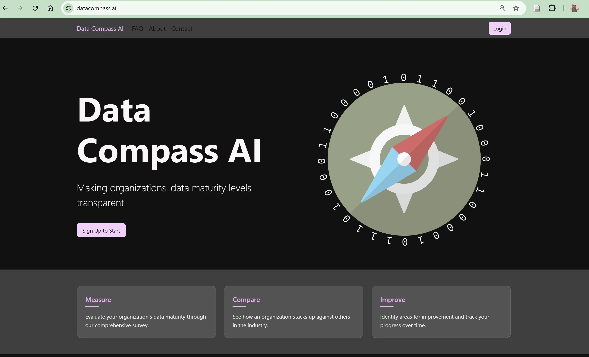

Roni Kobrosly Ph.D.'s Website
written by Roni Kobrosly on 2025-02-21 | tags: generative ai engineering career data
I'm so close to delivering a production web service to help folks in the data community. It's the most ambitious tech thing I've done and I'm extremely excited and nervous! I learned a lot along the way...
Read on... (407 words, approximately 3 minutes reading time)written by Roni Kobrosly on 2025-01-02 | tags: generative ai engineering
Over the holiday break, I had the opportunity to try out the Cursor Pro, one of the newer and more discussed GenAI coding assistants and IDE. It is meant to be like GitHub CoPilot, but the idea is it is its own IDE and AI is infused into each aspect of it. I learned a lot about both Cursor and the python Django framework through Cursor.
Read on... (908 words, approximately 5 minutes reading time)written by Roni Kobrosly on 2024-12-19 | tags: personal updates career data engineering
I recently posted on LinkedIn about the state of "data maturity" at organizations and got a lot of feedback. Are organizations, generally, more data mature now than say a decade ago?
Read on... (1334 words, approximately 7 minutes reading time)written by Roni Kobrosly on 2024-12-05 | tags: career data
The great Benn Stancil wrote a blog post way back in the summer of 2022, and ever since I read it I can't get it out of my mind. As you can guess from the title of this blog post, the topic is: "Do data-driven companies actually win? Some gut-based judgements on the effectiveness of data." We take for granted that collecting data, mining it for insights, and building ML gives companies a competitive edge. Is that true though? Have we rigoriously assessed that?
Read on... (998 words, approximately 5 minutes reading time)written by Roni Kobrosly on 2024-11-25 | tags: machine learning causal inference
Whenever I discuss causal thinking with data, people inevitably bring up the topic of automated causal discovery. I get it. It's sort of like the search for El Dorado and would change the field of data science to its core if it were possible. I talk about what it is and how this is unlikely to happen anytime soon.
Read on... (954 words, approximately 5 minutes reading time)